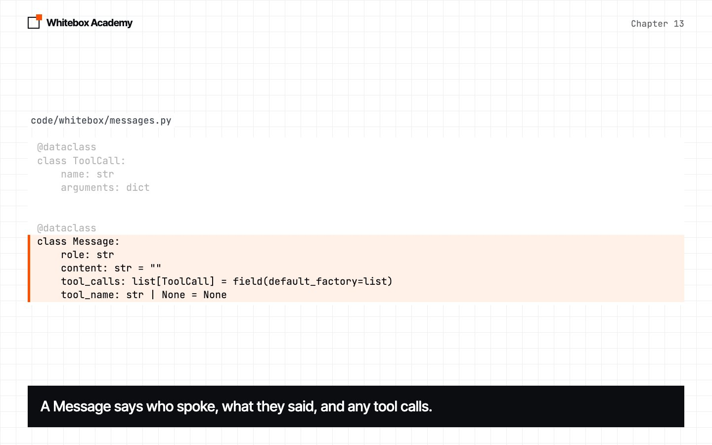
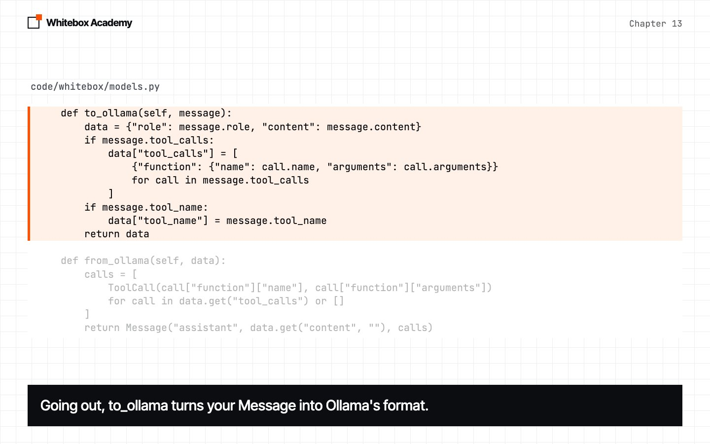
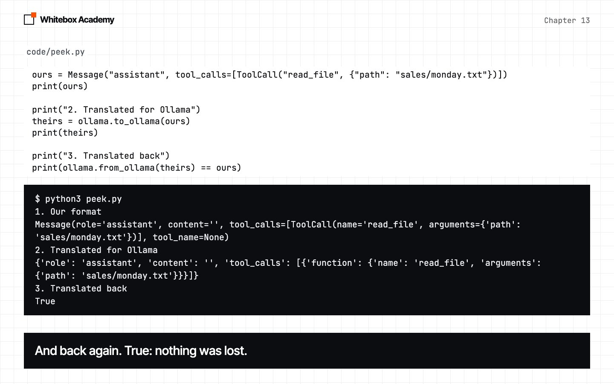
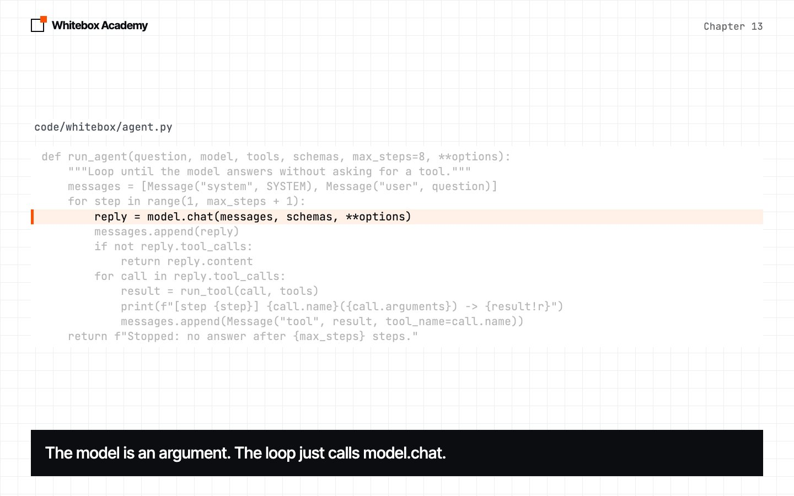

Pluggable model layer
Your agent only works with Ollama. Find out why, then make the model a part you can swap.
A working agent, with a hidden problem
Chapter 12 gave you a working agent. But every part of it assumes the model is served by Ollama. This chapter finds that problem and fixes it, and the fix is the first piece of a framework.
Start Ollama, and activate the .venv you made in chapter 05. You’ll work in chapters/13-pluggable-model-layer/code. From now on, code/ holds a package called whitebox, and each chapter in Part 3 adds to it.
Try another provider
A provider is whoever serves the model. Providers do the same job, but each has its own format for messages and tool requests. welded.py is provided. Its run_agent and run_tool are chapter 12’s, unchanged. The new part stands in for a provider we made up, called Boxy:
def boxy_chat(messages):
"""Boxy is a provider we made up. It has its own way of asking for a tool."""
return {
"role": "assistant",
"content": "",
"calls": [{"tool": "list_files", "input": {"folder": "sales"}}],
}
Predict: this tool request goes to chapter 12’s loop. Will the tool run, will Python crash, or will something else happen?
$ python3 welded.py
Answer: ''
Nothing crashed, and that’s the bad news. The loop looked for tool_calls, found none, and decided this was the final answer. The agent finished with an empty answer, and no error to tell you why.
Seven lines in run_tool and run_agent read or write Ollama’s format. To support Boxy, you’d change all seven, and then the agent would stop working with Ollama. The loop and the provider are welded together.
So we’ll split the code in two. Your framework uses its own format everywhere, and one small class per provider translates between your format and theirs.
The pieces, one at a time
-
Your own format
MessageandToolCallare dataclasses from chapter 03. Nothing in them mentions a provider.
-
Translate at the edge
OllamaModelsubclasses theModelbase class.to_ollamaandfrom_ollamakeep Ollama’s format inside this one class.
-
Check the translation
peek.pyis provided. It sends a tool request there and back, without calling the model.
-
Unweld the loop
The model is now an argument, and the loop only reads your format. The word Ollama doesn’t appear in this file.

The base class is chapter 03’s Tool idea again. A model takes a list of Messages and returns a Message, and anything that does this can drive the agent:
class Model:
"""The shape that every model shares."""
def chat(self, messages, tools=None, **options):
raise NotImplementedError
Inside a package, a dot means “this same package”, so from .messages import Message imports from whitebox/messages.py. data.get("tool_calls") or [] gives an empty list whether the key is missing or holds nothing.
One piece of Ollama’s format is left: the SCHEMAS in sales_tools.py. Chapter 14 fixes that.
Did the behavior change?
You’ve changed a lot of code that worked. Predict: at temperature 0, will the new agent’s output match chapter 12’s?
$ python3 demo.py
[step 1] list_files({'folder': 'sales'}) -> 'monday.txt\ntuesday.txt\nwednesday.txt'
[step 2] read_file({'path': 'sales/monday.txt'}) -> 'Coffee: 120\nTea: 80\n'
[step 3] read_file({'path': 'sales/tuesday.txt'}) -> 'Coffee: 150\nTea: 95\n'
[step 4] read_file({'path': 'sales/wednesday.txt'}) -> 'Coffee: 110\nTea: 70\n'
[step 5] add_numbers({'numbers': [120, 150, 110]}) -> '380.0'
The total coffee revenue across all the days in the sales folder is $380.
It matches chapter 12’s output line for line. We ran it 5 times, and all 5 matched. The model sees the same conversation as before, because the translation puts it back into Ollama’s format.
A model that isn’t a model
In chapter 05, you passed in a fake get so your tests needed no network. Now that the model is an argument, the same trick works here. FakeModel gives back replies you wrote in advance, and remembers what it was sent. pop(0) removes the first item from a list and gives it back.
class FakeModel(Model):
"""Gives back replies you wrote in advance, and remembers what it was sent."""
def __init__(self, replies):
self.replies = list(replies)
self.seen = []
def chat(self, messages, tools=None, **options):
self.seen.append(list(messages))
return self.replies.pop(0)
swap.py is provided. It sends one question through the same run_agent, first with OllamaModel, then with a FakeModel whose replies are scripted. Predict: the fake has no AI in it. Will the tool really run?
$ python3 swap.py
With OllamaModel
[step 1] read_file({'path': 'sales/monday.txt'}) -> 'Coffee: 120\nTea: 80\n'
According to the file, the coffee revenue on Monday was $120.
With FakeModel
[step 1] read_file({'path': 'sales/monday.txt'}) -> 'Coffee: 120\nTea: 80\n'
This answer was written in advance.
The fake was called 2 times.
On its last call, it saw 4 messages.
The tool ran both times. The loop can’t tell the two apart, which is the whole point. The output was the same in 5 of 5 runs here.
Now your agent can have tests that need no model. Run python3 -m pytest tests from code/, and you should see 5 passed.
Choose a model by name
Changing model shouldn’t change your code. So load_model builds one from a short string:
PROVIDERS = {"ollama": OllamaModel}
def load_model(spec=None):
"""Build a model from a "provider/name" string, or from the MODEL setting."""
spec = spec or os.environ.get("MODEL", DEFAULT_MODEL)
provider, _, name = spec.partition("/")
if provider not in PROVIDERS:
raise ValueError(f"Unknown provider {provider!r}. Choose from {sorted(PROVIDERS)}.")
return PROVIDERS[provider](name)
os.environholds environment variables, which are settings that live outside your code. Setting one differs between systems, so in this course we pass the name on the command line.partition("/")splits a string at the first/into three parts._is the usual name for a value you don’t need.PROVIDERSholds classes.PROVIDERS[provider](name)finds the class, then calls it, just like chapter 10’sTOOLS.
demo.py passes its argument to load_model. Predict: what happens with a provider that doesn’t exist? And with a real provider, but a model you’ve never downloaded? These are the last lines of each error:
$ python3 demo.py nobody/model ValueError: Unknown provider 'nobody'. Choose from ['ollama']. $ python3 demo.py ollama/not-a-model requests.exceptions.HTTPError: 404 Client Error: Not Found for url: http://127.0.0.1:11434/api/chat
load_model caught the first one itself, with a message that says what to do. The second is a raw error from Ollama, and you’ll deal with errors like that in chapter 17. If you’ve downloaded another model, try python3 demo.py ollama/<its name>. Your code won’t change, though the answer may.
What breaks
| What happened | What you see | The fix |
|---|---|---|
| Ollama isn’t running | requests.exceptions.ConnectionError | Start Ollama |
You ran pytest from inside tests/ | ModuleNotFoundError: No module named 'whitebox' | Run python3 -m pytest tests from code/ |
| The model isn’t downloaded | 404 Client Error: Not Found | Check the name with ollama list |
A FakeModel ran out of replies | IndexError: pop from empty list | The loop made more calls than you scripted, so add a reply |
Exercises
Open exercises.py in the chapter folder. You’ll fix the failure from the start of this chapter by adding Boxy to your framework, without changing whitebox at all:
to_boxy: translate aMessageinto Boxy’s format.from_boxy: translate Boxy’s reply into aMessage.BoxyModel: write a newModelsubclass. Its check runs the realrun_agent, on the reply that defeated chapter 12’s loop.add_boxy: add it toPROVIDERS, soload_model("boxy/small")works.RuleModel: write aModelwith no AI in it at all, and watch the loop run it.
Then run python3 -m pytest test_exercises.py from the chapter folder, not from code/. These checks use fake models, so Ollama doesn’t need to be running. You’ve finished when you see 5 passed.
Common mistakes
- Letting a provider’s format leak out of its class. If you write
["function"]outsideOllamaModel, the weld is back. - Changing the loop to add a provider. A new provider is a new
Modelsubclass. - Trusting a fake too far. A
FakeModeltests your code, not the model. It can’t tell you whether a real model will reach 380. - Forgetting that a fake is scripted. It gives its replies in order, whatever you send it.
What you opened
- A provider’s format shouldn’t reach your agent loop.
- Your framework has its own format:
MessageandToolCall. Modelis the agreement. Anything with achatmethod that takes and returnsMessages can drive the agent.- Each provider gets one class, which translates at the edge.
FakeModellets you test the agent with no model running.load_modelpicks a model from a name, so changing model doesn’t change your code.
A class that translates one interface into another is known as the adapter pattern. OllamaModel is an adapter.